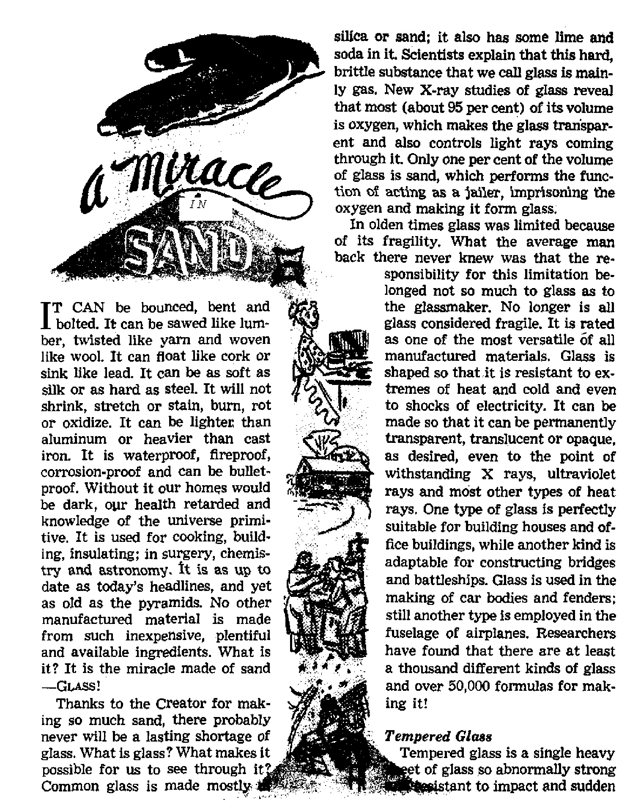
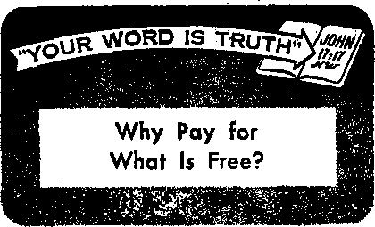
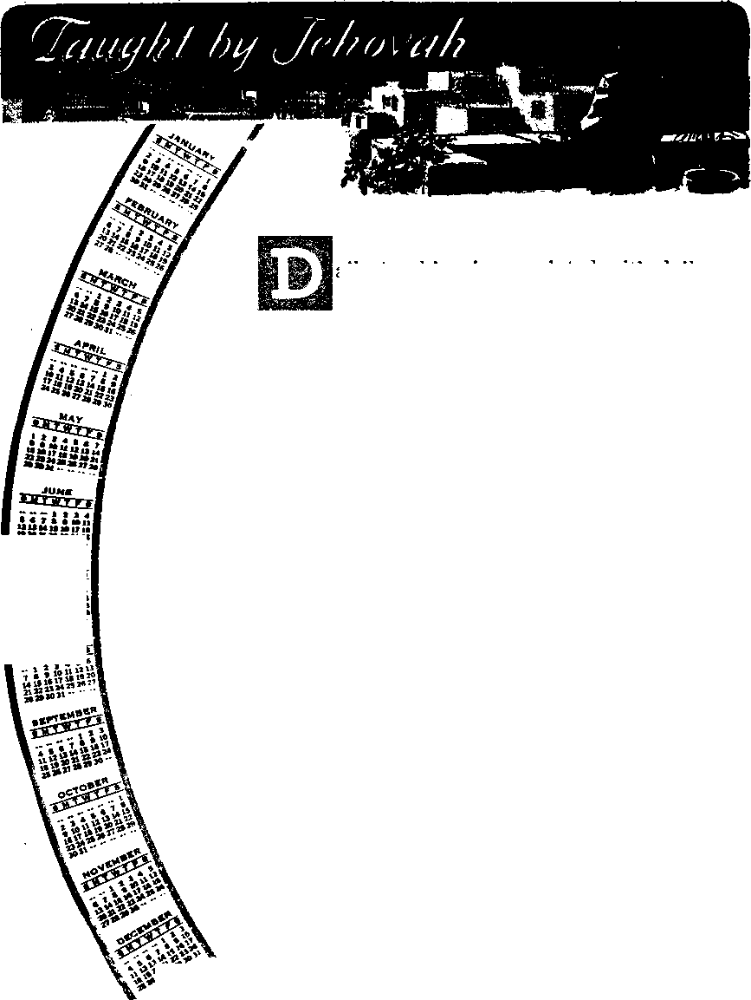

News sources that are able to keep you awake to the vital Issue* of our times must be unfettered by censorship and selfish Interests. "Awake 1” has no fetters. It recognizee facts, faces facts, is free to publish facts* It is not bound by political ambitions or obligation*; it fa unhampered by advertisers whose toes must not be trodden on; it is unprejudiced by traditional creeds. This journal keeps itself free that it may speak freely to you. But it does not abuse its freedom. It maintains integrity to truth.
"Awake I" uses the regular news channels, but is not dependent on them* Its own correspondents are on all continents, in scores of nations. From the four corners of the earth their uncensored, on-tMe* scenes reports come io you through these columns. This journal** viewpoint is not narrow, but is international. It is read in many nations, in many languages, by persons of all ages. Through its pages many fields of knowledge pass in review—government, commerce, religion, history, geography, science, social conditions, natural wonders—why, its coverage is as broad as the earth and as high as the heavens.
"Awake 1" pledges itself to righteous principles, to exposing hidden foes and subtle dangers, to championing freedom for all, to comforting mourners and strengthening those disheartened by the failures of a delinquent world, reflecting sure hope for the establishment of a righteous New World.
Get acquainted with "Awake 1" Keep awake by reading "Awake!”
Published Semimonthly Bi watchtower bible and tract SOCIETY, INC.
117 Adam* Street Brooklyn 1, N. Y., U. S. A.
N, H. Knobs, President Ghant Suitbb, Secretary
Printed the i'mup:
Lingaaffe In whle* HtF* mijaiEn! El pihllrflM: Stmlttujnthly—-AIrtkaans, Engl uh, Finnish, Fienrh, German, HolUndish, Norwegian, Spanish, Swetilsh. Monthly— Danish, Greek, Portteiese, Uktaintan,
Office's Yuriy BUbscrjptloti Bate
AHfflci, U-S-, 117 Adams St., Brooklyn 1, N.Y. *1 Aiitralli, 11 BerejfoTd Hd. r StntMcH. N8.W. 8a Canala, 40 Irwin Ave,, Toronto 5, Ontario |1 EniUnd, 34 Craven Terrace, London, w. 2 Ta SoatH Africa, Private Bif, P-0. EUndafvntohi,
Tf«i«hAI 7a
Five cent* a copy
fititfttanm should ba nut tn office tn your Country in compliance with regulation! to guarmta life delivery of money- Remittance! are accepter! at Brooklyn frota Muntritf where no office la located, by international money order only- SnbwTiptlwi rates In different eutmtrlw are here stated in local currency, Notici of expiration (with renewal blank) It gent at leatt two Issues before subscription plrej. Change of ailreu when sent to our tiffin nay be expected effective within one month. Hend four old » weU as new atMtress.
Entered ai setond cliwB matter at Brooklyn, N, Y Act Of March 3, 1879, Printed 1b IT. S, A.
CONTENTS
Are McCarthy’s Methods Catholic Ideals? 3
Finds Election Campaigns Impossible
Identifying Counterfeit Christianity
Behind the Schools Controversy
How Metal and Trees Corroborate the Bible
Christendom's Ear-tickling Diet
"Your Word Is Truth"
Jehovah's Witnesses Preach
Are McCarthy’s Methods Catholic Ideals?
MENTION the name McCarthy in the
United States these days and the ears of almost everyone within hearing range will perk up. Some people have even endeavored to inject a religious issue into the McCarthy controversy, but few have gone as far as did Monsignor Edward R. Martin, former chief chaplain of the First Army, and now pastor of St. Angela Merici church in the Bronx, New York.
Speaking at a Catholic function in New York city on November 7, Martin said that because of his Catholic ideals McCarthy was in danger of losing his position in the Senate. “Joe is a really sincere Catholic,” he said, “I personally know that over $5,000,000 has been pooled to kick Joe out of the Senate, and that’s only a small portion of what is pouring into Washington. The reason is solely because of his Catholic ideals.”
And that, to put it mildly, blew the lid off! Officials of Freedom House in New York, including George B. Ford, Roman Catholic pastor of Corpus Christi church, said: “We have every reason to believe there is no foundation of fact in the charges by Msgr. Martin unless and until he makes available documentary proof of his allegations.” Such proof was not forthcoming. In fact, to reporters Msgr. Martin’s secretary and the assistant pastor "were firm in declaring that there would be no further statement from him.”
“What makes this fairy tale significant,” the Freedom House officials said, “is that the good monsignor has endeavored to persuade American citizens that the reason for this so-called anti-McCarthy fund 'is solely because of his Catholic ideals,* a view which is not shared by Senator McCarthy himself. We resent this statement because it can only lead to the spread of bigotry and intolerance. It bears false witness and breeds disunity.”
Seven members of the faculty of Colgate University then sent telegrams to Msgr. Martin and to Cardinal Spellman asserting that Msgr. Martin had an obligation to tell the public all the facts about the purported $5-million pool. “We are confused by Father Martin’s statement that McCarthy is to be ‘kicked out’ of the Senate 'because of his Catholic ideals,’ ” the telegram to Cardinal Spellman said in part. "These are serious charges. Those of us who openly and aggressively have opposed McCarthy and his methods are accused of persecuting him ‘because of his Catholic ideals.’ . . . We would like to hear from you—Father Martin’s superior—that the statements attributed to him do not represent the views of the responsible leaders of the Catholic Church in America.” Still no explanation.
Certainly not all those who have protested against Senator McCarthy’s excesses are “leftists.” The Watkins Committee of the U.S. Senate is not. Highly respected
Time magazine is not The widespread American protests (whatever one's opinion of their accuracy) have been based upon loyalty to American principles-*-justice, the Constitution and the Bill of Rights. Msgr, Martin did not show where these protests were misfounded or how they were in error. Thus the Colgate University faculty members told Msgr. Martin: “You owe it to all Americans—Catholics, Protestants and Jews—to explain why the movement against the excesses of Senator McCarthy . , * involves an attack on Catholic ideals.” The Colgate faculty members pressed their point to Cardinal Spellman with the question: “Do you really want the American people to believe that the Catholic Church identifies the widespread concern over preservation of the Bill of Rights with opposition to Catholic ideals?”
The monsignor, like all Americans, has a right to his opinion of Senator McCarthy’s activity, and indeed he has the right to express that opinion publicly, although he should not be guilty of the hit-and-run tactics of making a controversial charge, getting it on the front page of newspapers, then refusing to prove or deny it, just letting it stand.
Time magazine was not guilty of religious hatred when In its November 22 issue it said of the Senate’s discussion of the censure recommendation against McCarthy: “Joe McCarthy was fighting the only way he knows how, with tooth, nail and knee, to make the debate one of the most acrimonious and personally bitter in Senate history.” The highly respected New York Times was not attacking the Senator’s religion when on November 11 it said that McCarthyism has come to mean: “The invasion of personal rights, the irresponsible attacks on individuals and institutions, the disregard of fair democratic procedures, the reckless shattering of mutual trust among the citizens of this country, the terrorization of loyal civil servants .., the disruption of orderly governmental processes . . . contempt for the BiJJ of Rights and for the ordinary rules of public and political decency.”
Does the monsignor, who himself brought the matter up and who refuses to say who has the $5 million, how it was raised, how it is being used, or how opposition to McCarthy is opposition to Catholic principles, wish the American public to think such ideals are Catholic ideals?
His silence would make us wonder.
More than a year ago, on November 10, 1953, the conservative and highly respected Christian Science Monitor reported that “the activities of Senator Joseph R. McCarthy (Rep.) of Wisconsin have had the incidental effect, whether accidental or intentional, of increasing the proportion of Roman Catholics to Protestants employed in the public [government! service.** The Monitor did not suggest that more Catholics were being hired, but that more Protestants were being fired. It said that “Government officials, seeking to protect their departments and bureaus from McCarthy attacks, have increasingly resorted to the practice of employing Roman Catholics as security and personnel officers. This appears to provide immunity from attack. The sequel is that the proportion of Roman Catholics included in dismissals Is low and the proportion of Protestants high/' Though there was controversy over the Monitor’s suggestion, the Christian Century said that the item's writer, Joseph C. Harsch, spoke “as one of the most experienced—as well as most respected—of the Washington correspondents.** Msgr. Martin’s association of McCarthy’s activity with Catholic ideals might tend to corroborate this.
ppRUTH has never been pop-I ular in this world. Nor were those who championed truth and regarded principle above expediency considered wise. Contrariwise, such men were labeled as “madmen,” “fools,” “pestilent fellows,” “seditionists,” “possessed of the devil,” etc. Jesus Christ was the greatest truthteller among men. His whole life was devoted to that end. To the Roman ruler, Pilate, Jesus said: “For this purpose I have been born and for this purpose I have come into the world, that I'should bear witness to the truth. Everyone that is on the side of the truth listens to my voice.” Pilate’s answer to Jesus was a sardonic, “What is truth?” As if Jesus did not know what he was talking about and that no one understood the principles of truth and justice.—John 18: 37, 38, New World Trans.
Nevertheless, Jesus’ words regarding the power of truth and right are with us to this day and are repeated daily by hundreds of thousands of people, by statesmen and politicians, clergymen and Christians, believers and unbelievers as a remedy for this world’s ills. Jesus’ words were: “If you remain in my word, you are really my disciples, and you will know the truth, and the truth will set you free.” When he made this statement, the intellectuals of his day turned to the listening crowds and said:
for Christ
If popularity you took, Ch ration ity will not bring it; if fame and fortune are to what you aspire, Christianity is not the way; if you regard men and not principle, indulgence and not dedication, tradition and not God, Christianity is not for you. This article answers why.

do you listen to him?” Even though the majority closed their ears to reason, this did not prevent Jesus from living and speaking the truth. Nor was Jesus alone among men called “mad” for so doing. —John 8:31, 32; 10:20, New World Trans.
When the apostle Paul gave a truthful account of his conversion to Christianity before Festus, King Agrippa and Bernice, Festus “said in a loud voice: ‘You are going mad, Paul! Great learning is driving you into madness!’ But Paul said: ‘I am not going mad, Your Excellency Festus, but I am uttering sayings of truth and of soundness of mind. In reality, the king to whom I am speaking with freeness of speech well knows about these things; for I am persuaded that not one of these things is hidden from him, for this thing has not been done in a corner.” To Festus truth sounded like madness, to Paul it was riches, wisdom and knowledge. “Oh the depth of God’s riches and wisdom and knowledge!
How unsearchable his judgments are and past tracing out his ways are! For ‘who has come to know Jehovah’s mind, or who has become his counselor?’ Or, 'Who has first given to him, so that it must be re-
This man “has a demon and is mad. Why paid to him?’ Because from him and by
him and for him are an things. To him be the glory forever. Amen.” Therefore, not all men, especially those considered wise among men of this world, have an ear for truth.—Acts 26:24-26; Romans 11:33-36, New World Trans.
To the Corinthians, who thought quite highly of themselves, Paul said: “We are fools because of Christ, but you are discreet in Christ [in your own estimation]; we are weak, but you are strong; you are in good repute, but we are in dishonor. Down to the present hour we continue to hunger and also to thirst and to be naked and to be knocked about and to be homeless and to toil, working with our own hands. When being reviled, we bless; when being persecuted, we bear up; when being defamed, we entreat; we have become as the refuse of the world, the offscouring of all things, and we are so now.” No, neither the truth nor its proclaimers were ever highly esteemed. They were, as Paul says: “Become as the refuse of the world, the offscouring of all things.”—1 Corinthians 4:10-13, New World Trans.
Centuries before Paul’s day the prophet Isaiah well described the moral atmosphere of his time, saying: “And judgment is turned away backward, and justice standeth afar off: for truth is fallen in the street, and equity cannot enter. Yea, truth faileth; and he that departeth from evil maketh himself a prey,” or, as the margin says, “is accounted mad.” The same conditions we find in the world in which we live. The principles of truth and justice are tossed into the streets. To be fair, honest and upright in practice and in business is to be called a “fool,” “impractical,” “not right in the head,” “not up to business,” “soft,” “mad.”—Isaiah 59:14, 15.
To display integrity and enthusiasm for one’s religion is to be looked down upon as peculiar and fanatical To refuse an appointment on conscientious grounds is to be isolated as a “strange son,” and frequently the family and neighborhood form a decidedly lower opinion of that one’s intellect. “Now, don’t be a fool,” they say to him, “just do as others do. When you are in Rome, do as the Romans.” That is the sedative that is often prescribed for uneasiness of conscience. Certain tricks or dishonest ways are glossed over as “the way of business. Everybody does it. If you want to make a living, that is the way you have to be.” Righteous principles no longer count.
For one of Jehovah’s witnesses serving as a branch, district or circuit servant, or for a missionary or pioneer witness of Jehovah God, to turn down an attractive job offer that pays well and offers a great future, appears to be the height of foolishness to so-called great minds and progressive men of this world. They just seem unable to understand why any young man or woman would want to devote his entire life to serving God, and why he is happier for it. To them that is absurd. Such persons must be mad! Why waste your youth? say they. Now is the time to make a “killing” in the business world when opportunities are presenting themselves. Why not pull a few “un-Christian strings”? Is not everyone else doing it? Away with principle! Little do they realize it, but it is this greediness that maddens. Men permit money-making to rule their passions. And the slightest change in the business world will cause their mental barometer to rise and fall accordingly. The accelerated pace drives them mad with greed.
Christian witnesses of Jehovah, being governed by God’s Word, need not be caught in this swirling whirlpool. They have and believe the truth, which cautions them that “godly devotion along with selfsufficiency” is a means of great gain. As
Paul said: “We have brought nothing into the world, and neither can we carry anything out. So, having sustenance and covering, we shall be content with these things.”—1 Timothy 6:6-8, New World Trans.
Instead of Jehovah’s witnesses’ being fools, madmen, for declaring the truth and putting God, Christ and all spiritual things first in their lives, Jesus showed the irreligious and greedy man to be the madman, the fool of this world. In his illustration on the prodigal son, Jesus said: "When he [the prodigal son] came to his senses he said: . I will rise and journey to my fa
ther.’ ” Before this, while leading a riotous life with harlots, he was out of his mind, mad like this old world. It was only upon leaving the old world’s greedy and immoral ways of doing things that he showed he had come to his senses.—Luke 15:17, 18, New World Trans.
In another illustration Jesus warned his hearers against being covetous: “Be on the alert and on guard against every kind of covetousness, because even when a person has an abundance his life does not result from the things he possesses.” Money or accumulated riches is not everything in life. Far better, is a good standing with God. “Those who are determined to be rich fall into temptation and a snare and many senseless and hurtful desires which plunge men into destruction and ruin. For the love of money is a root of all sorts of injurious things, and by reaching out for this love some have been led astray from the faith and have stabbed themselves all over with many pains. On the other hand, you, O man of God, flee from these things. ’ But pursue righteousness, godly devotion, faith, love, endurance, mildness of temper. Contend for victory in the right contest of the faith, get a firm hold on the everlasting life for which you were called and you declared the right confession publicly
before many witnesses.” Madness steins from an unbalanced mind grasping greedily for more and more. It is a diseased mind that exaggerates things out of their proper setting and importance. Men who work for this life only are mad indeed!—Luke 12: 15; 1 Timothy 6:1-12, New World Trans.
The apostle Paul, whom Festus called “mad," when speaking of the ancient Romans and Greeks, who were sd proud of their cleverness, said: "Although asserting they were wise, they became foolish.” "Because, although they knew God, they did not glorify him as God nor did they thank him, but they became empty-headed in their reasonings and their-unintelligent heart became darkened.” These self-styled intellectuals became fools in God’s sight. What proved them foolish was that they “turned the glory of the incorruptible God into something like the image of corruptible man and of birds and four-footed creatures and creeping things. . . . and venerated and rendered sacred service to the creation rather than the One who created, who is blessed forever.” An ox knows his owner and an ass his master’s crib, but the wise men of this world could not distinguish a creation from the Creator, a watch from the watchmaker. They become fools through their empty-headed reasonings. —Romans 1:22, 21, 23, 25, New World Trans.; Isaiah 1:3, 4.
Paul rightly summed up the matter by saying: “Did not God make the wisdom of the world foolish? For since, in the wisdom of God, the world through its wisdom did not get to know God, God saw good through the foolishness of what is preached to save those believing.... a foolish thing of God is wiser than men, and a weak thing of God is stronger than men.” “Now we speak wisdom among those who are adults, but not the wisdom of this system of things nor that of the rulers of this system of things who are to come to noth-
ing. But we speak God’s wisdom in a sacred secret, the hidden wisdom, which God foreordained before the systems of things for our glory. This wisdom not one of the rulers of this system of things came to know, for if they had known it they would not have impaled the glorious Lord/’ What the wise men of this world thought to.be foolishness turned out to be wisdom of God; what they held to be wisdom God rated as foolishness.—1 Corinthians 1:20-25; 2:6-8, New World Trans,
Jehovah God foretold through his prophet Jeremiah that he was going to make all nations mad. “For thus saith Jehovah, the God of Israel, unto me: Take this cup of the wine of wrath at my hand, and cause all the nations, to whom I send thee, to drink it And they shall drink, and reel to and fro, and be mad.” A part of this madness can now be seen in the world, but the rest will come when God makes all nations to drink of this cup of his wrath at Armageddon, As a warning Jeremiah describes the famine-stricken state of Christendom: “A drought is upon her waters, and they shall be dried up; for it is the land of graven images, and they are mad over idols.” “Flee out of the midst of Babylon, and save every man his life; be not cut off in her iniquity: for it is the time of Jehovah’s vengeance; he will render unto her a recompense. Babylon hath been a golden cup in Jehovah’s hand, that made all the earth drunken: the nations have drunk of her wine; therefore the nations are mad.”—Jeremiah 25:15, 16; 50: 38; 51:6, 7, Am. Stan. Ver.
Ancient Babylon went from nation to nation and made them all successively drink of the wine cup of her wrath, her lust and zeal for world domination, and her aggressive programs and campaigns for attaining such. To Babylon the wine cup was a source of pleasure and it intoxicated her with power and caused her to reproach and defy the Most High God, Jehovah, and his earthly representatives. To the weaker nations whom she made drink of the wine of her wrath it was a bitter potion and it made them mad and blinded their eyes to Jehovah God.
The nations are blind to God’s purposes, drunk with power and doped with Babylon’s brew. Even Christendom has missed the precious opportunities of joining in God’s “strange work.” She has tasted of Babylon’s wine and gone mad with “riotous living,” loving pleasures of this world more than God. She has let her heart “become weighed down with overeating and heavy drinking and anxieties of life.” Her greedy shepherds and blind leaders have mingled with the spiritual adulterers or harlots of this world, and have drunk of the “wine” of Babylon, Satan’s organization, whereby all nations have been made drunk and mad.—Luke 21:34, New World Trans,
The only real sanity today exists within Jehovah’s organization. These are no part of this world gone mad. They are for Je-hovah’s new world of righteousness, and that new world’s growing popularity is a deadly plague of madness to the old world. New World announcers are classed as fools by the wise men of this old world. But says Paul: “If anyone among you thinks he is wise in this system of things, let him become a fool, that he may become wise. For the wisdom of this world is foolishness with God; for it is written: ‘He catches the wise in their own craftiness.’ And again: ‘Jehovah knows that the reasonings of the wise men are futile.’ Hence let no one be boasting in men.” In due time both the fool and the wise man will be known: For “wisdom is vindicated by its works.” —1 Corinthians 3:18-21; Matthew 11:19, New World Trans.
temperature change that it is almost impossible to break. It is made by heating ordinary plate glass until it is almost plastic and then cooling it suddenly with jets of cold air. The result is a glass Of unusual characteristics. A thin plate of this tempered glass supported the weight of an elephant without sagging or breaking. A pane of tempered glass can be placed on a cake of ice and molten lead poured over its surface without affecting it. A two-pound steel bafl can be dropped from a height of five or six feet on a sheet of glass no more than a quarter of an inch thick without scratching or cracking it. Take tempered glass, treat it like a rubber mat and bend it a hundred thousand times. And, unlike rubber or metal, the glass will not grow weary or tired. After the hundred thousandth time the glass will spring back to its exact original shape, something no other known material will do.
Glass alone remains singularly untouched by corrosion. Glass piping in chemical factories has lasted for years where other types of pipes collapsed in sixty days. Already in dairies, in food factories and in beverage plants visitors see milk, fruit juices and ginger ale pumped through pipes of glass instead of stainless steel. Where stainless steel pumps used to last but a few months, six glass pumps installed some three years ago are still in use, with no signs of wear. A new method of electric welding makes it possible for a mechanic to make joints of glass as easily as he would with metal. And as for glass springs, one authority reports that “scientists can show you one that has been flexed almost 500,000,000 times without apparent ill effects!” Tempered glass is so hard that a single scratch through its surface will cause the entire glass to disintegrate completely into untold millions of tiny, harmless pieces. But this rarely happens.
Fiber GAm
Spun glass as flexible and soft as silk is no longer in the realm of fantasy. Modem fiber glass is formed by causing molten glass to flow from extremely small orifices, from which it is picked up by a high-pressure steam or air blast and pulled into long, fine fibers. Each fiber is no more than an average ,00027 inches in diameter or one fifteenth as thick as a human hair, A pound of fiber glass would stretch around the world. Each tiny glass fiber is a solid rod possessing all the properties of glass in bulk. It is heat-resistant and noncombustible, cannot absorb moisture, rot or decay, is resistant to ordinary weathering and to acids, oils and corrosive vapors.
Take a handful of pieces of glass and crush it in your hands. Does the thought frighten you? You can do that with glass wool without any ill effects. It is as springy as rubber sponge. It is so light that it weighs only one tenth as much as solid glass. In such form it is actually ninety-nine per cent air and only one per cent glass. Because of these properties glass wool is an excellent insulator against heat and cold at all temperatures. For people in cold climates a coat lined with glass pile is guaranteed to keep you warm at forty degrees below zero. A man wearing a twenty-nine-pound glass fiber suit has endured the other extreme, remaining a minute and a half in a wall of flame at 2,400 degrees Fahrenheit without experiencing bodily discomfort.
Steel is the modem symbol of strength. Yet glass fibers have a greater tensile strength in proportion to weight. Glass fibers averaging twenty-three one-hundredthousandths of an inch in diameter have a tensile strength of more than 250,000 pounds to the square inch. A thin strand of yarn made of thousands of glass fibers twisted together can lift several thousand
pounds without breaking. A firehose made of woven glass is twenty pounds lighter per 100 feet than conventional cotton hose, yet more durable, more compact, lighter when wet and remains more flexible at low temperatures.
Glass fibers are on their way to replace not only construction steel but aluminum, brass, bronze and cast iron. In the nonme-tallic group it will substitute for cork, synthetic plastics, asbestos, rayon, rubber, cotton and linen. Glass fiber is so versatile that it is difficult to escape its use in everyday life. Luxurious chairs are being made with glass fiber upholstery; clothing and household fixtures, luggage and automobile fenders, fixtures and finishings are all being made from this miracle shaped from sand.
Foam Glass
From the sand sea comes another miracle—foam glass, one of the world's lightest building and insulating substances. It is made by adding finely divided carbon to ground glass and heating the mixture to a high temperature in a mold. The flourlike charge expands into a mass of black foam that fills the mold to capacity and then solidifies. The result is a rigid honeycomb with countless millions of cells of inert gas per cubic foot, each cell perfectly sealed in pure glass. This amazing glass product weighs only about a tenth of the ordinary product. It floats on water like cork and with about the same degree of buoyancy. Foam glass is often used today in place of balsa wood and cellular rubber. Being completely resistant to fire, dampness and termites, it is used to construct walls and ceilings; also as core-wall insulation with all types of masonry and concrete construction.
Experts predict that in the not-too-dis-tant future the world may have 10,000 different kinds of commercially usable glass. Glass for tabulating machines, oven doors, signs, dance floors, roofing shingles, food dehydrators. Glass to serve as the core of radio recording disks; glass for surgical cloth and sponges. For the farmer a special glass fertilizer containing boron, an important plant food. For the carpenter and mechanic glass hammers and machine tools that will outlast cast iron. For the lame, glass legs that can be molded to the exact contour of the natural leg and that will have a lifetime resistance to wear. For shoppers glass fiber-lined refrigerator bags that protect frozen foods and ice cream on the trip home.
Other authorities tell of glass so pure that one wrong grain of sand in a top might make it defective. Such glass transmits ultraviolet rays. Corning Glass Works can make optical glass so transparent that a newspaper can be read through a ten-foot-thick block of it Glasses are made with polarized lenses to keep out glare and blinding light. With glass man sees stars spin and microbes squirm. Windowpanes admit billions of dollars’ worth of light by day, and electric bulbs give man light for work and play at night. Man turns glass into jewels or bearings for electrical indicating instruments that formerly required polished sapphires. The weight of such a vital, pinpoint piece of glass is three ten-thousandths of an ounce; its diameter is only seven hundredths of an inch. Compare that with the Mount Palomar telescope’s glass “eye,” which weighs 20 tons, is almost 17 feet in diarqpter, which took nearly a year to anneal and years more to polish to an accuracy of a millionth of an inch, and you can begin to sense the versatility of this miracle in sand—glass.
These are only a few of the multitudinous reasons why glass is enjoying a golden era. Think, what would this world be without glass? Technically and scientifical-
ly, where would it be without the help of glass? Think of the scientifically exact, difficult-to-make pieces of optical glass that are used not only in telescopes, microscopes, binoculars, photographic lenses, motion-picture projectors, spectacles and spectroscopes, but also in many unusual, less familiar instruments of science and research, such as the contour-measuring projector, the optical protractor, the microprojector and the X-ray stereoscope? How valuable and versatile is glass to man!
In the United States alone over one billion electric-light and electronic tubes were produced in 1953, and more than 18 million lamp chimneys; plus a billion or more tumblers, goblets and other stemware. The Coming Glass Works at Coming, New York, alone makes more than 35,000 items in glass! In a single year a total of 121,500,000 gross of containers, valued at aboui $600,000,000, reached the shelves of stores and homes in every corner of the United States, Their use actually totals aboui 74,500,000,000 units of glass-packed merchandise—an average of 465 for ever} man, woman and child in the United States Nine of the 300 glass firms in the United States turned out more than 1,700,000,00( square feet of glass. From a “fragile” be ginning, today glass is a formidable two billion-dollar yearly business!
What a miracle in sand! Yet, its presen prosperity is but a dim reflection of wha its future holds. Tomorrow’s families mai long live in tempered glass houses withou having to worry about a shattering exper ience from those who throw stones.

FINDS ELECTION CAMPAIGNS IMPOSSIBLE
■ A United Press dispatch dated November 3,1954, tells about a citizen of the United States who finds election campaigns quite impossible. Discussing the election campaigns with a companion on a bus, the citizen was overheard to say: "The trouble with me is that every campaign year about this time I get to believing absolutely everything either side says about the other.’' This would present a Pr6blem! Especially so, if one sincerely sought a man of principle and integrity as his candidate.
Identifying Counterfeit thrlstlanlty
> Many are the devices employed by Christendom's churches to induce their flock o hand over money. Coin envelopes, lotteries, bingo and bazaars are all used. Form letters are also common, but one sent out recently by Trinity Lutheran Church in Brooklyn, &New York, had a new twist. It began: “Have you ever noticed the little scarlet threads woven into the texture of our paper money? They mark it as genuine, and are to prevent counterfeiting. This might remind us that Christ has woven the scarlet thread of His blood into every dollar that the Christian owns, and marked it as His own. We have been purchased with his blood, and therefore all that we are and have belongs to Him." True, the red threads rn&rk the money as genuine, but this appeal for money marks the church as counterfeit. For the mark identifying counterfeit Christianity was given by the apostles of Christ themselves: "We are not those who commercialize [or make gain of] the word of God as many’men are/'—2 Corinthians 2:17, Xew World Trans., footnote.
BEHIND THE SCHOOLS CONTROVERSY
are the vigorous protests justified?

HE nearly 29 million students J in the public schools of the Unit* ed States study many subjects and learn a great deal. They go to schools that have made great strides during the past fifty years. Yet, despite the study and effort that have gone into improving the American school system, widespread protests are heard that the children do not know as much as they should.
Parents have protested that their children could not read aloud. Businessmen have said that they could not find stenographers to write grammatical letters. Employers have said that their mechanics could not read simple directions. Others pooh-pooh these statements, saying that public education today is the best it ever has been. They say that the critics’ charges are false—that they are based only upon isolated incidents, not on general conditions. Yet the schools controversy is growing.
One scholarly publication suggested that “perhaps never before has the ‘question’ of American education been discussed so widely and with so much heat as it is being discussed today.” “Our schools,” said the editors of Ladies’ Home Journal^ “furnish dinner-table argument in every home that has children of school-going age.” Katherine G. Struve, long a public high-school teacher, said: “That we are turning out thousands of illiterates with high-school diplomas is deplored by public-school teachers.’*
Of course, the causes are marly, not just one. A major cause is the tremendous increase in the school-age population, producing a pathetic overcrowding in classrooms, and a resulting lack of the amount of individual attention that the teacher can give each student Another cause is the meager salaries paid to teachers in comparison with those paid in other professions, which skimpiness turns many good teachers into other fields. In one recent year, for example, 60,000 teachers quit teaching—an annual decline that has never appeared in any other work! But certainly not to be overlooked in any analysis of today’s education are the modern teaching methods. Almost everyone will agree that schools are overcrowded and teachers are underpaid, but not everyone will agree
upon what teaching.
methods should be used in
“Progressive,” “modern” or “permissive” education has sprung from the theories of philosopher John Dewcy.< He believed that the process of learning was not the accumulation of a stock of information, but the acquisition of certain habits. Thus, to him, learning specific items of information was not the important thing, but he believed education should be based upon activity, upon habit formation and upon the child’s developing interest.
The stress on “happiness” is both a major asset and a major shortcoming of modern education. The ultraharsh disciplinarian of the past century who, as a matter of course, whipped by the chart (one lash for every foot above three climbed up a tree, two lashes for blotting a copybook) is gone, but the modem system has swung so far to the other extreme that today, in some instances, the teacher may actually fear rebellious students’
Automatic Promotions
■EF^odern education does not want to ‘penalize’ a child by keeping him in one grade for several years, so it keeps him moving along year after year, whether he has shown a great deal of accomplishment or not. Thus, by the seventh grade some students may have reached only fourthgrade ability, while others have attained eighth- or ninth-grade proficiency. A California parent said bluntly: “Out here we promote them according to size.” A New York teacher complained that it is a crying shame to see eighth and ninth graders hand in work with their own names spelled differently every time. Paul Woodring, professor of psychology at Western Washington College of Education, said that in many states, including his own, a high-school diploma, which once meant that a certain standard had been met, now means only that the student has attended school for twelve years.
Progressive education tries to eliminate competition, because it considers this a bad thing that makes for unhappiness. Critics of the modem methods think competition is a good thing that spurs to greater effort. One school superintendent said: “If a youngster is spurred by the desire to equal or surpass somebody he is going to do a better job.” The objection that is raised to this is that the majority cannot excel and are continually reminded of this failure to do so. Perhaps the solution was pointed out by psychology professor Paul Woodring, who said: “I do not think it is either necessary or possible to eliminate competition'in learning activities, but the child should have an opportunity to compete with those of approximately his own ability rather than with those far above or far below him—which is what frequently happens when [with the conveyor-belt method of automatic promotions) be is kept with his age group for all activities.”
A recent Ladies* Home Journal survey found that, out of a cross section of American adults, 79 per cent of the people thought pupils in the first eight grades who failed most of their subjects should be kept back, while only 16 per cent thought they should be promoted. (The remaining five per cent were undecided.) Many parents and teachers believe that the ‘world owes me a living’ attitude of some of today’s youth has been heightened by the ‘school owes me a promotion’ idea they have developed under modem education. Dr. Henry M. Wriston, president of Brown University, objects to the competitionless automatic promotion system because he says it lends “an illusion of achievement where none exists.”
The attempt is made to lure rather than to drive children into learning. The children are encouraged to learn by doing, to set the pa.ce of their own learning, and to be spared the accusation of failure just because their perception, their interest or their mental capacity does not match that of their fellow students. The modern teacher may believe, and properly so, that he must find out why a student does not wish to learn, in order to be able to help him, and that he must provide for those whose perception or mental capacity varies. But at least a certain group of lazy students may need some pushing as well as pulling
—whether modem educators think so or not.
Reading, ’Riting, 'Rithmetic
vigorous proponent of the modem W-Al methods wrote in the Christian Century: “It is difficult to see how anyone can actually believe that the old reading, writing, ’rithmetic routine is something to be desired in modern education.” It certainly is true that much more is needed in today’s schools than those famed “Three R’s,” but can those basic subjects be slighted? Its failure to teach many children to read comprehendingly is one of the foremost criticisms raised against today’s education. Schools are not expected to turn all their students into Shakespeares or Einsteins, but there is something basically wrong with any school system that fails to teach satisfactory reading, and by satisfactory reading we mean the ability to read with understanding without having to labor over what is read. Why is reading so important? Because it is a door to other fields, a basic tool for gaining further knowledge. Whether one wishes to become a scholar or a plumber, an executive, a deliveryman, or a Christian student of God’s Word, without the ability to read comprehendingly he is severely handicapped.
Writing and arithmetic suffer too. In Brookline, Massachusetts, schools omitted handwriting for nine years, and teen-agers could not read even post cards from relatives or handwritten orders when they took summer jobs in grocery stores. After telling of this, Collier’s writer Howard Whitman asked: “Are we striving for knowledge, wisdom, excellence? Or are we settling for mediocrity?”
After a five-year study of the subject the New York State Regents Council on Readjustment of High School Education did not suggest that the three R’s be slighted, but its October 27 report urged that stronger emphasis be placed on reading, writing, arithmetic and other basic skills, including “intelligent listening, effective talking or oral expression, accurate observation, and clear thinking, including weighing evidence and values before reaching conclusions.”
The New York City “Report of the Superintendent's Committee on Delinquency in the Secondary Schools” said much of the failure in secondary schools is due to the inadequacy of the pupil’s skills in reading and arithmetic and recommended “that the remedial reading and arithmetic programs at the secondary school level should be extended to reduce these disabilities where possible.” What happens under the present method is that many teachers secretly rebel, and simply because they feel it is their duty to the children they teach reading early in the first grade (which is not yet considered ready to begin it) and script writing in the second. Others also administer hard, old-fashioned authoritarian discipline, ruling their students with threats and fear.
A Bronx, New York, mother complained: “Let’s cut out the playing in the first grade. If children are old enough to go to school, they’re old enough to learn. Also give them some homework from the first-grade on—we had it. It will teach them a certain amount, of responsibility right from the beginning, and they won’t be stumped by homework in the higher grades.”
This runs counter to-Dewey, but so do a considerable number of critics these days. One asked: “How did one philosophy acquire in lower education a dominance quite out of proportion to its standing —considerable as it is—among professional philosophers? And fantastically out of proportion to popular agreement with its basic principles? . . . His authority is
mare probably explainable as an historic accident; he was the only first-rate philosopher to take an intense, evangelical interest in the lower schools”
Kgnodern education has made great ■Ml | strides and accomplished many things* It teaches a tremendous number of students an amazing number of subjects. During the past century the number of United States high-school students has grown from less than 100,000 to more than six million, and in cities like New York the boast is practically true that “we teach everything. Anything you can name, we teach somewhere*” But it also remains true that the modem, widely expanded system has failed to interest a great stratum of intelligent, but stubborn or lazy, boys and girls. As Time recently commented: “In what might be termed the era of the slob, young worshipers of the television comic, the bookie and the comic-book monster can slip off into easy ‘general1 courses and finish their school years with their minds practically ungrooved by thought.”
The child who really wants to learn something usually learns it, and it is true that training should be made as interesting as possible. But it is obvious that while interest is important to learning, learning should not depend only upon the immediate interests of the children. “Learning by doing,” as it is commonly practiced, is not a good guide for all education, which should be, especially on its higher levels, increasingly intellectual and symbolic. It is said that the failure of going from the concrete (things learned by habit) to the abstract (the things that must be done with the mind) is that too many otherwise competent young people remain stuck in the concrete.
Competition among students may be unfortunate, but competition is universal, and children can be trained to meet it calmly. Discipline, when it property is training for right conduct, contributes to mental health more often than it interferes with it. In the modern world certain inhibitions are essential and (though educators do not always agree) these can be learned without excessive frustration or neuroses.
The New York Daily News recently suggested that “permissive" discipline in "progressive” education “where the student does as he pleases—until the teacher can no longer cope with him” be abolished; that automatic promotions be abolished, since “experience has shown the practice destroys incentive on the part of both pupil and instructors”; and that there be a concentration on “pre-delinquent studies- in the elementary schools, where delinquency symptoms appear as early as the age of 6.” In other words, it recommended: train them right—early! And that is what God said about training children. It is the right course.
Modern education is neither as bad as some scandal-loving newspapers would imply, nor as good as some modern educators would like us to think. Modem education is quite right in its view that learning should be made as interesting as possible. It is quite wrong when it fosters conditions under which lazy children have hardly learned to read or spell. The schools have done much, but there are few people who would deny that they can do much more. The traditionalists view was too severe; the modernist view has, in many instances, proved too lenient. And, though it is far from the only cause, this lack of modem discipline has also proved a contributing factor to growing delinquency. But that subject will have to wait for a later article in this series.

Border Collie
By “Awokel" correipendant in Britain

ON December thing he does not
12, 1953, an understand, and old shepherd in the will soon give up
Peak district of Derbyshire, England, left home with his dog Tip. Their destination was the moors, the home of the sheep, known and loved so well by the dog and its master. Neither dog nor master returned that night. Rescue squads, keepers, relatives and police were organized for the search, but without result. Their only link with the old shepherd was the dog which was sighted once, but was swallowed up again in the moorland mist. Fifteen weeks later the body of the old shepherd was found. There, still faithfully guarding its master was the dog Tip. This faithful stand taken by the dog through snow, sleet, wind and bleak winter weather prompted one observer to say: “This is the most amazing story of a dog’s faithfulness I have ever heard.” What breeding and training would produce this loyalty and devotion, and why is the sheep dog called “the wisest dog in the world”?
To get a sheep dog that will respond to training and eventually prove to be proficient, the shepherds prefer to procure a two- or three-month-old puppy and, if possible, they like to get particulars of its ancestry. A young dog with retriever blood in it may wander from his post in pursuit of game or rabbits. Again, a dog will always submit to punishment if he understands its purpose, but a dog of mixed breed may resent being punished for some-his work. At about ten months a young dog will be put with an older experienced dog to be taught. The young one watches his teacher with great interest and so learns the meaning of his master’s every signal. Successful training depends upon true friendship between man and dog.
Al] dog lovers know that when a dog wants to show pleasure and appreciation it gestures with its tail. The average puppy wags its tail when it is pleased. A working spaniel or retriever wags his tail when he is on the scent. The Border collie, or British sheep dog, shows pleasure in another way. As his interest grows and he becomes more fascinated with the job he is doing he curls upward the white tip at the end of his tail.
Skillful trainers study carefully the animal’s own individuality. The training of a sheep dog does not mean making a machine of him. He has a mind of his own but he must always be under the control of his master. The dog loves to please his master and knows at once if he has failed. Therefore the mere withholding of a kind word is sometimes sufficient punishment. A relationship of playful affection does not lessen at all the obedience or understanding of the dog if he is properly trained.
No dog is ever allowed to run on sheep unless he can be stopped at once. No matter how fast he is running, if he is given the command to stop he must drop like a stone. If, on the other hand, he is commanded to come, he must rise quickly, but not until he gets the command. Specially important in any sheep dog is what is called the “eye,” which is really the “eye of control.” As far as dogs are concerned, it is something that is peculiar to sheepdog work alone. A good sheep dog not only will use the eye, but at the right second, after holding the sheep spellbound before a pen, will employ just the right movement to maintain perfect control.
What are the methods used by the shepherds to give commands to their dogs? Generally speaking, in Britain the farther south the more often is the spoken word used in command. Ashton Priestly, who owns the present world champion sheep dog, uses both the whistle and the spoken word. “It is possible,” said Priestly, in an interview with the writer, “to work a dog under favorable conditions from a distance of over a mile from its master.” Many of the whistles are taken from the bird songs, the night jar, peewit, thrush and others. Imagine six dogs working together, each having its own command for “right,” “left," “steady,” “sit down,” or others peculiar to the shepherd. The dogs know them all and obey the one intended for them alone. The movement of the master’s hand Is also a help. “Way out o’ that,” shouts the shepherd, at the same time swinging his arm, and the dog knows what is wanted. When a job is complete and it is time to return to the master, the command “That’ll do” seems to be used by all.
Sheep Oops in Other Lands
New Zealand, Australia and America all have their own methods of sheep-dog training. In New Zealand for instance a special breed known as a “Huntaway” is used. Owing to the nature of the rough country in the snow leases of the South Island, a dog would work differently from those on the Derbyshire moors. In New Zealand it is necessary for the dog to work with a great deal of barking, a thing unknown in the British field. Noise is also used in Australia where large flocks have to be moved, the cracking of whips being a necessary spur to keep the sheep on the move.
In both these countries the origin of the sheep dog can be found in the British Border collie. It is generally thought that the kelpie, so well known as the sheep dog of Australia, is a cross between a Border collie and a dingo. That is also the opinion of Dr. Kelley, an Australian authority on the subject. In America a “North American Sheepdog Society” has been formed whose constitution states that its aim is to “collect, preserve and publish reliable records of fact concerning the breeding and working ability of the sheepdog known as the Working Collie.” In recent years many British dogs have crossed the Atlantic to the United States where sheep-dog trials are fast gaining popularity.
It is when we see the sheep dog working in his natural setting or watch him at a sheep-dog trial that we fully appreciate the co-ordination of heart and mind shown by the shepherd and his dog. The keenness of the animal in locating, bringing in and penning the sheep under the careful guidance of his master gives us a picture of man’s correct use of the instructions given him by the Creator: “Further, God blessed them and God said to them: ‘Be fruitful and become many and fill the earth and subdue it, and have in subjection the fish of the sea and the flying creatures of the heavens and every living creature that is creeping upon the earth.’ ”—Genesis 1:28, New World Trans.

VERY year archaeologists and scientists । uncover information to add to the already | overwhelming proof of the Bible’s hlstori-cal accuracy. Now from the modern land of Israel come enlightening facts. No metal, it was once believed, waS to be found in the new country of Israel. But a Biblical archaeologist named Nelson Glueck remembered 1 Kings 7; 45, 46: 'All these vessels, which Hiram made for king*Solomon for the house of the Lord [Jehovah], were of bright brass. In the plain of Jordan did the king past them? Now Glueck knew that the word "brass” was a mistranslation for copper.
So it was tiiat Glueck spent more than twenty years in Palestine following the Bible's directions. One day in 1934, a few miles south of the Dead Sea, he came upon crumbled wails and furnaces black with heaps of copper slag. It was once a great copper smelter. Farther south, he found seven similar centers. The pottery in all of them was from the time of Solomon. Four years later he excavated a phenomenal processing Site near the Gulf of Aqaba; This was Ezion-geber, the one-time Pittsburgh of Palestine. In 1949 experts proved the existence of enough ore there to yield 100,000 tons of metallic copper. Today the area is a bustling miner's camp. "To find it, I literally followed the Bible’s description ” said Glueck. "Ezion-geber, which is beside Eloth, on the shore of the Red sea, in the land of Edom.” —1 Kings 9:26,
One of Israel’s leading geologists, Dr. Ben Tor, knew that the Bible spoke not only of copper but of iron. "For the Lord [Jehovah] thy God bringeth thee into a good land, . - . a land whose stones are iron, and out of whose hills thou mayest dig brass [copper]?* (Deuteronomy 8: 7, 9) So Dr. Ben Tor investigated. A few miles from Beer-sheba he found immense cliffs saturated with red-black ore. Here was an estimated fifteen million tons of low-grade iron ore. Recently, engineers discovered a mile-long outcropping of excellent ore, 60 to 65 per cent pure iron.
Even modern tree planting has highlighted the Bible’s historical accuracy. Said Israel’s noted authority on reforestation, Dr. Joseph Weitz: "The first tree Abraham put in the soil of Beersheba was a tamarisk. Following his lead, four years ago we put out two million in the same area. Abraham was right. The tamarisk is one of the few trees we have found that thrives in the south where yearly rainfall is less than six inches?* —Reader’s Digest, March, 1954.
A United Press dispatch for July 26, 1954, reported the following: “Stray cats in Hartford, Connecticut, will find it a little harder to locate a home from now on. A church group had been collecting the cats and selling them to persons who promised to give the cats a good home. The funds were used for church work. But someone protested, state officials were forced to step in and now the cats are on their own.” Jesus told Peter on one occasion: “Feed my young lambs.” "Shepherd my little sheep.” "Feed my little sheep?’ But he never gave a command to 'collect the cats and sell them for the upkeep of the church? Perhaps this is one of those cases of “mistaken identity,” the majority of religious leaders being the blind leaders that they are.—John 21:15-17, New World Trans.; Matthew 15:14; 23:13-24.
TOPSY-TURVY MORALS
< A warped standard of morals is one of the reasons that life is so harrowing and times so hard to deal with. The Bible foretold these topsy-turvy morals at 2 Timothy, chapter three, pointing out that the warped moral standard Is a sign of the “last days” of this world. An insight into the warped moral situation was recently provided by a questionnaire study made by Farleigh Dickinson College of 2,500 high-school and 1,000 college students in New Jersey. Regarding the results, Senator Hendrickson of New Jersey reported the following, according to William Moore, writing in the Chicago Tribune:
C "Approximately three-fourths of these young people brushed aside lying and cheating Us acts which are not considered delinquent. Most of the youths agreed that to steal or rob is anti-social, but nevertheless more than 12 per cent did not consider stealing particularly wrong, and 9 per cent would not agree that it is delinquent to rob. Approximately 15 per cent could see no delinquency trait in wanton-Jy destroying property. Among the college students polled, one out of five saw nothing particularly wrong in sex violations/'
Senator Hendrickson also revealed that some of the students believed stealing was al! right “if you can get away with it,” Some verbatim comments from the students: "Three-quarters of high school children cheat in tests —but are they delinquent?” "How many would actually graduate without cheating?” "Children know their parents tell lies in excuses sent to the school/’ One phase of the survey shed light on the matter of juvenile delinquency, This was the fact that half of the college students recommended that parents be punished for the delinquency of their children. One of the youths who pinned the blame on parents wrote: “When children see and hear of police taking graft, parents fixing traffic tickets, friends smuggling perfume across the border ... they feel that they, too, can do something and get away with it.” -- -Science Digest, September, 1954.

Christendom's Ear-tickling Diet
Writing in the September 1, 1954, issue of Christian Century, Simeon Stylites tells of a certain man having trouble with his family on the matter of prayer. The family said: "We do not object to family prayers but make it snappy/' Stylites then comments: “That stem command, ‘Make it snappy/ has been given to writers of books, to magazines, to teachers and lecturers and preachers. This is not done in the interests of brevity or clarity but in defense of laziness and on behalf of atrophied brains. What is not, or cannot be, reduced to the level of a not very bright ten-year-old is labeled ‘high brow/ Anyone who can read words having more than two syllables is called an ‘egghead’ and brushed off. This disdain of intelligence is one of the most terrifying marks of decadence in America. The test of any kind of writing and speaking comes to be, for the ‘mass man' of today, not its truth or its value but its ‘snappiness/ ... In churches today the ‘make it snappy’ fellowship wants as a sermon a bunch of snappy anecdotes tied up with baby ribbon. They want nothing much above the level of Red Buttons or Groucho Marx." And the clergy readily dish up the ear-tickling diet foretold by the Bible: "In accord with their own desires, they will accumulate teachers for themselves to have their ears tickled.”—2 Timothy 4:3, New World Trans.

By “AwakeI" corretpondent in Southern Rhodetia
IN 1855 David Livingstone paddled down the mile-wide Zambezi River in southern Africa. A surprise awaited the African explorer, perhaps the biggest surprise of all his exploring life. For no other white man had seen what he was about to see. This is the story of that surprise.
As Livingstone explored the river, in what is now known as Southern Rhodesia, his ear caught the sound of a torrential roar; his eyes beheld clouds of white mist boiling up. What amazing spectacle was this? As he mused on the exciting possibilities, he landed on an island and found himself on the brink of one of the world’s truly great waterfalls. Because of the immense columns of spray that coupled with a thunderous noise, African aborigines had named the spectacle, poetically and aptly, Mosi-oa-tunya, meaning “the smoke that thunders.” Livingstone did some naming of his own: fret'-LX?
1. DEVIL'S CATARACT
2. MAIN FALLS
3. LIVINGSTONE ISLAND
4. RAINBOW FALLS
5. ARMCHAIR
6. EASTERN CATARACT
7. CHASM
8. GORGE
9. BOILING POT
10, RAIN FOREST
11. RAILWAY BRIDGE
(420 ft. atev* rirtr} called the falls by the name of his queen, Victoria.
To be truly great a waterfall must have a maximum combination of the factors of volume, height, breadth and picturesqueness of form and coloring. Victoria has all these. But there are two other great waterfall wonders in the world: Iguassu in / South America and Niagara Falls in North America. How does Victoria compare? Well, the Iguassu Falls is about 200 feet high and Niagara Falls is 167 feet high, but Victoria Falls drops a magnificent 350 feet! And unlike Iguassu, Victoria Falls makes a sheer drop with no intervening ledges. Victoria Falls is wider than Niagara (1,900 yards against 1,167). Yes, Victoria is so big that one cannot grasp its immensity. You have to walk well over a mile, plus a detour over the bridge spanning the gorge, to go the length of the brink opposite the falls.
But there is much more that makes Victoria one of the three great falls: its volume of water. Why, the water that the Zambezi hurls over to the bottom of a deep chasm is greater than the water flow of South America’s massive but little-known Iguassu, Enough water dashes into Victoria’s chasm even at low water to provide every man, woman and child in Southern

Rhodesia with more than four gallons every minute. In floodtime it is nearly twenty times that amount. The annual average is 47,000,000 gallons a minute; the highest known flow is 165,000,000 gallons a mln* ute!
If one approaches Victoria Falls from above, as Livingstone did, he will see on his far right Devil’s Cataract, so named from the fierceness with which the waters descend. A small island separates Devil's Cataratt from Main Falls. Both are spectacular, Devil's Cataract, in contrast with the languid glide of most other sections of the Zambezi above the falls, rushes in rapids foaming to the precipice’s edge and leaps far out into the chasm, its waters seeming to break suddenly into millions of white particles, sparkling like diamonds in the sunlight Main Falls is most striking. It has been said that there is no more magnificent spectacle in the world than this —a half-mile sheet of foaming white and green water plunging some 350 feet Main Falls sends over a greater volume of water, it thunders louder, it shoots a higher cloud of spray into the sky than any other part of the falling Zambezi.
Next in interest is the beautiful and impressive spectacle of the hundred cascades of picturesque Rainbow Falls, which is separated from Main Falls by Livingstone Island. At low water exquisite Rainbow Falls appears as a hundred white cascades separated by narrow sections of black rock on the lip and down the side. Sunshine tints the spray with brilliant rainbows that send photographers into a feverish state of shutter-clicking ecstasy.
Rainbow Falls is separated from Eastern Cataract by a very minute island called “Armchair,” because of the splendid view one has from this point. Incidentally, during dry seasons the islands, such as Livingstone Island where the explorer camped in 1855, are accessible by canoe or launch supervised by skilled African guides.
The mass of falling water from all these cataracts, disintegrating in air, shattered by collision with the rocky bottom and, in flood, with the opposing cliff, is driven backward and upward in clouds of spray, rising hundreds of feet in the air in everchanging forms. Out of the whirling spray the rudely assaulted river thunders its startled indignation. The sound of its thunderous protest can be heard at a distance of twenty or thirty miles. And the river’s mist, rising in the air in spray clouds like the smoke of a vast fire, can be seen for twenty miles. In floodtime the pillar of mist may be seen for seventy miles.
The geologist Molyneux, who studied Victoria Falls very extensively, described the mist this way: “As the vast masses of foaming water are precipitating, with the constant roll or thunder into the abyss, they are broken up into comet’s tails, again into spray, and still again are comminuted into driving mist. The air forced down with them sets up a current along the canyon and, ascending in eddies in the chasm, carries with it spendthrift of the dashing spray, and rises in vapoury clouds and columns far above the Falls, , . . Amidst this sunlit vapour is born the crowning spectacle of the Falls. , . . The glorious double rainbow follows one whether in the rich prismatic colours of the daytime or the neutral tints of the moonlight.”
For about four fifths of the distance from the west end of the falls canyon to the outlet gorge the edge of the canyon is crested with trees, including tall and graceful date palms, fems and tropical undergrowth. Since these trees are bathed in spray rising from the falls chasm, rain drips from branches, twigs and leaves. So this narrow tract of land Ifi appropriately called the Rain Forest At <some points the Rain Forest creeps, with dripping vegetation, to the very verge of the precipice. In other places wet and slippery rocks substitute themselves for vegetation at the edge of the chasm. A hard, well-made footpath traverses the forest, paralleling the falls canyon and only a short distance from it. Frequent branches lead from this main footpath to those points at the edge of the precipice from which especially fine views may be obtained. The most striking Victoria view is of Main Falls from Rain Forest.
Another marvelous view of Main Falls can be had, during the low water season, from Livingstone Island. From this island Livingstone caught his first glimpse of the falls, and to the visitor in the dry season it affords one of the most interesting of viewpoints. On the western edge of Livingstone Island one can lean over the precipice and get a fine view of the eastern section of the Main Falls, which projects a white mass well out into the chasm.
What makes Victoria Falls uniquely spectacular is the fact that the Zambezi River discharges its water, not into a wide and adequate basin like Niagara's, but into a narrow mile-long trench.
After the Zambezi falls into the deep, narrow chasm, the waters rush wildly from each end of the canyon, where the abyss Is shallowest, toward the middle, the currents seeking escape from the imprisoning walls of the opposing precipices of basalt. The two sections meet and find this vent about three fourths of the distance from the western to the eastern end of the chasm. Here the raging waters force themselves through another deep crack even narrower than the falls canyon itself. Down this narrow opening the reunited waters of the Zambezi rush as rapids with tremendous power. And almost immediately the waters dash full front against another precipice of basalt. They are thrown back on themselves in a furious, boiling whirlpool-fashion. This is "the boiling pot." Thus diverted from its course, the raging torrent shoots off almost at right angles through another narrow gorge approximately paralleling the falls chasm and nearly reversing its direction of flow in that chasm. When the river is about on a level on this course with the west end of the falls canyon it doubles back upon itself at an acute angle. When almost on a level with the east end of the falls chasm it repeats this zigzag process. And so after racing down its zigzag channel the waters splay out finally into a wide river. Almost a thousand miles after leaving Victoria Falls, the Zambezi River comes to rest in the Indian Ocean.
There is no doubt that Victoria Falls, "the smoke that thunders," is truly the most thunderous on earth. To many it is the most beautiful.
<t This is the age of juvenile delinquency, the age when children, instead of parents, often run the home. So the following item, though it comes from the Old Farmer’s Almanack for 1883, does not sound old at all: "A father, fearing an earthquake in the region of his home, sent his two boys to a distant friend's until the peril should be over. A few weeks after, the father received this letter from his friend: ‘Please take your boys home and send down the earthquake.’ ”
FUNERAL CUSTOMS IN CURACAO

By /'Awsk*!” eorr®»pondent in Curasao h
■BECAUSE of the rocky surface of this * I|1 Island of Curacao in -the Netherlands h M West Indies, just north of the South h American country of Venezuela, the dead gen' erally are not buried in graves, but in tombs * above the ground. To many strangers the rows «.< of silent tombs are a curiosity, but these tombs £ do not tell the visitors of the many other un- * usual customs of a native funeral. m
V’ Near the island's largest hospital is a large * morgue called the "dead house,” where the « family of the deceased can rent a room ac- £ cording to the size of the crowd expected. It the person Is a Protestant, the minister can give a funeral discourse here for the benefit of the women In attendance, and then the men • will go to the cemetery where the service is »* concluded. There are no women in the proces- h sion of a native funeral If, however, the per- £ son is a Catholic, there will be no service at jj the morgue, but the procession will go to the h church while the bells toll. The priest does not * go to the cemetery, but at the cemetery the * funeral director leads in repeating a certain £ number of "Hail Mary’s" and "Our Father's.” *
In the rural areas when a person dies at >■< home all the pictures are removed from the ij walls, and, if any barrels of rain water are sitting under the drainpipe, these are emptied, because it is believed that the death angel used a dagger to kill the person and then washed it In the water as he was leaving. ; < V' While the deceased Is waiting to be taken to the church or cemetery, the weeping mourn- £} era talk to the dead person. Some people go m to funerals just to hear what the mourners * will say to the corpse. A conversation might * go something like this: "Why did you do this * to me, you were my best friend, now who is going to comfort me? Who is to look after £ your children? If you see my mother up there * greet her for me, tell her things have changed down here since she left, the price of beans has gone up . . On and on they go. There h have been missionaries in Curacao for over 300 years, but in all that time the people have not learned the simple Scriptural truth that m "the living know that they shall die: but the £ dead know not any thing.”—Ecclesiastes &:5. *
Due to the extreme heat and lack of em- h balmlng, if a person dies early in the morning he is usually buried late that afternoon. If a corpse is kept overnight it will most likely be buried early the next morning. The coffins are made to fit the body, so to speak, being wide at the shoulders and tapering toward the feet. Before the corpse is taken away the people say the rosary and ask God that the soul of the deceased rest in peace. They also stick pins in the clothing of the corpse as a final farewell and for the deceased not to return and trouble them. If the procession should happen to pass the home of the deceased on the way from the funeral home to the grave, the hearse will stop briefly in front of the home fdr the corpse to have a last "look.” •«;' For eight days after the funeral a light is kept burning in the bedroom of the deceased, and each night the friends and family gather to pray for his souL It is believed that the soul stays around and leaves on the eighth night, so on that night no one is allowed to stand in the doorway, for fear of hindering the soul’s departure.
The majority of the population is associated with the Catholic religion, and near each of the large and imposing church buildings is a well-kept cemetery. The Catholic population has been led to" believe that the ground within the walls of these cemeteries is holy ground, and to be burled anywhere else brings great shame on the famfly of the deceased. Therefore, many people maintain their connection with the church, perhaps a once-a-year attend ance at Easter time, so that at death they can be burled in the Catholic cemetery and not in the despised and "unholy” government cemetery, which for some reason is called colebra berde (green snake). Many people openly declare that they would not hesitate to leave the CathoJ/c church altogether if it were not for bringing shame on the family by being buried in the government cemetery.
< By means of the restoration of true worship many of these people are learning that "the dead know not any thing,” and that the real hope is in a resurrection. Also, they are learning that it does not matter where a person Is buried so long as he remains in the memory of God, because Apocalypse (Revelation) 20:13 (Catholic Douay Version) says: "And the sea gave up the dead that were in it: and death and hell gave up their dead that were in them. And they were judged, every one according to their works."
IT TAKES money to build churches, and that churches are interested in money is no secret But charging for something that is to be distributed free is certainly not honest and least of all is it Christian. Nor can we imagine any reputable person trying to drag God into such unchristian practice, nor can He be.
When certain religious organizations tax their members one tenth of their earnings they are thereby commercializing the Word of God. How so? The Word of God is free. It is not for sale and not to be sold. By the same token, Christianity is also free. And as far as the ancient tithing law is concerned, it is as obsolete as the Levitical priesthood. Jesus instructed his disciples: “You received free, give free.” The prophet Isaiah beckoned: "Ho, every one that thirsteth, come ye to the waters, and he that hath no money; come ye, buy, and eat; yea, come, buy wine and milk without money and without price.” They bought the hunger-and-thirst-satisfying Word of God at the cost of their time studying and the precious hours spent with others in assembly, but not with money. John the apostle wrote: “ ‘Come!’ And let anyone thirsting come; let anyone that wishes take life’s water free.”—Matthew 10:8, New World Trans.; Isaiah 55:1; Revelation 22:17, New World Trans.
But say religious leaders, "Let’s be practical. If we were to adopt this principle we would soon go broke and our churches would collapse from want of finances.” So they resort to the out-dated practice of tithing, and the parishioners are firmly led to believe that it would be Scripturally wrong for them to give less than a tenth of their income to the demanding church. The Seventh-day Adventists even go so far as to contradict themselves on this point. They claim Israel’s Law covenant was in two parts, the Ten Commandments written on stone and the ceremonial law later dictated to Moses. They say that this latter part, the ceremonial rituals and ordinances, was the part done away with by Christ. Well, then, how does it come that they talk so much about keeping the tithing law, seeing that it is no part of the Decalogue, but is part of the added regulations?
"Emphasis on Christian tithing is rapidly developing as a main theme in the churches of the National Council of Churches of Christ in the U.S-A.,” said “Rev.’.’ T. K. Thompson, executive director of the stewardship department. “Millions of Americans are coming to realize,” said he, "that giving generously to the church is a part of a Christian’s response to God’s call on his life.” This religious leader stated that tithing will be promoted in the council's denominations through movies, literature, sermons and speeches. Tithing is proclaimed as "a good business proposition,” as going “into business with God,” as “the great business of life,” as “an act of worship,” as “a supreme act of worship," and it is claimed that, “if every Christian would tithe, the entire world could be evangelized and peace would be secure.” But nowhere can Scriptural support be mustered to the aid of such extravagant claims.
The first mention of tithes in the Bible is found at Genesis 14:20, where it tells about Abraham giving Melchizedek a tenth of the victory spoils obtained in a particular battle. Some conclude from this experience that Christians should pay weekly, monthly or yearly tithes. To draw such a conclusion is to overlook some very important facts, namely, that there is only one recorded instance of'Abraham’s giving a tithe. Hence it was not a regular practice with him, nor is there any record showing that he established a tithing system for his descendants. The fact that Jacob voluntarily made a special vow to pay tithes on certain conditions proves that they had not practiced tithing.—Genesis 28:22.
In the expansion of the Law given at Mount Sinai, tithing taxes on the land, the fruit trees and the herds and flocks were taken for the support of the Levites, since they had no common inheritance in the land with the other tribes. Christians maintain no Levitical priesthood. No “clergy class” exists among true Christians, for whom tithes are collected. “All you are brothers.” Those given oversight of Christian congregations, therefore, are unpaid slaves, not hirelings, not lovers of money or greedy for selfish gain. The apostle Paul tells about working with his Own hands making tents for his support. No one collected tithes to help or pay him. Tithing was unknown in the early church until greedy wolves had entered in and spoiled the purity of the organization.—Leviticus 27:30-33; Matthew 23:8-11; John 10:13; 13:15,16; 1 Peter 2:16; 5:1-4, New World Trans,
Another thing, out of the tithing fund appropriated under the Mosaic Law, certain provisions were also taken for the comfort of strangers, orphans and widows. It appears that aid to the poor was to come from the third-year tithes, and that these tithes were always in food, and most certainly not in cash or wages or from any income. However, under the oppressive rule of Israel’s selfish and wicked kings tithing was either neglected or misused, and as a result the nation did not have Jehovah’s blessing.—Deuteronomy 12:5-19; 14:2229; Malachi 3:8-11.
After Jesus made his appearance he put an end to the old Law covenant with its ordinances. While on earth his only commendation of tithing was a sort of lefthanded one aimed at the formalistic and hypocritical tithe-paying religionists. Under the new system of things that he established, love, and not some compulsory tax system, was the motivating quality behind Christian giving.—Ephesians 2:15; Matthew 23:23.
Give? Give what and how much? David answers: “For thou [Jehovah] delightest not in sacrifice; else would I give it; thou hast no pleasure in burnt-offering, The sacrifices of God are a broken spirit: a broken and a contrite heart, O God, thou wilt not despise.” “O Lord, open thou my lips; and my mouth shall shew forth thy praise.” The prophet Micah said the same in these words: “What doth Jehovah require of thee, but to do justly, and to love kindness, and to walk humbly with thy God?” What we can give God, then, is our unqualified obedience and worship. This is ours to give, along with the extent to which we can “honor Jehovah with [our] substance.”—Psalm 51:16, 17, 15; Micah 6:8; Prov. 3:9, Am. Stan. Ver.
Jesus emphasized this principle of all-ness, that is, giving our all and not merely a tenth, when he commended the poor widow who gave "all of what she had, her whole living.” Paul likewise says: “Present your bodies a sacrifice living, holy, acceptable to God, a sacred service with your power of reason."—Mark 12:41-44; Romans 12:1, New World Trans.
So, a life wholly dedicated to God is what he requires and not only a tenth.

Jehovah’s Witnesses Preach in All the
SPAIN was one of the first civilized countries of Europe, but knowledge and freedom are far behind the times. Geographically, it is a most beautiful country and ideal for vacationing, Spain enjoys a temperate climate with a low rainfall. It is a fruitful land, abounding with luscious, mouth-watering Spanish oranges. To evoke a special blessing on the orange plantations in the Murcia province, the Catholic Church has added a new “virgin” to her ever-growing list of “saints”—the Virgin of the Orange!
Spaniards are a very friendly, amiable people, in a word, simp&tico. This word may also be applied to another people in-tematlonally famous for their good will and pleasant disposition, Jehovah’s witnesses. With confidence it can be said that the Spanish Jehovah’s witnesses are the most simpdtico people on the face of the earth!
While Spain has all but vanquished Protestantism, it has not been able to blot out the pure worship of Jehovah, the only true God, completely. Today Jehovah’s witnesses are rapidly growing in number. Since 1948, when there were just 43 witnesses in the whole country, they have increased to 297 in a recent report. This constitutes a 590 per cent increase! Would not the Catholic Church like to match that? The harvest for gathering in the other sheep of the Lord is ripe in Spain.
The preaching activities of Jehovah’s witnesses reach out into all parts of the country. Congregations in at least eight cities and towns are firmly organized and going strong. An interesting feature is that almost the entire preaching activity is carried on by native Spaniards. At the commemoration of the anniversary of Christ’s death last April over 500 persons came together in their respective congregations testifying to their close and loyal adhesion to the New World society.
Of course, all these meetings are private. There are no Kingdom Halls in Spain. No public lectures, no circuit, district or national assemblies, and no street gospel-preaching either. In short, there is no public testimony. This has to be the case, according to Spanish law, which states in article 6: “The profession and practice of the Catholic religion, which is that of the Spanish state, will enjoy official protection. No one will be interfered with in his religious beliefs nor the private exercise of his worship. No other ceremonies or external manifestations will be permitted than those of the Catholic religion.” Jehovah’s witnesses desire to aid persons of good will privately to learn more of the blessings of Jehovah’s lasting new world now so near at bawl, so they, too, rightfully come within this legal provision of Spanish law. As the apostle Paul counseled, they pray that “kings and all those who are in high station” will let them “go on leading a calm and quiet life with full godly devotion and seriousness.”—1 Timothy 2:1, 2, New World Trans,
On the whole the message of the Kingdom has a very good reception here. Although officially more than 99 per cent of the people are of the Ttoman Catholic religion, many of these are not in heart sympathy with the teachings and less still with practices of this sect The horrors perpetrated in the name of religion during the Spanish Civil War (1936-1939) are still fresh In the minds of many people. They remember how priests and nuns took an active and often bloody part in that struggle between nationalist and republican armies. It is not surprising, therefore, to find, particularly in the big cities, a strong anticlerical feeling. Many express themselves that the church says too much and does too little. “I believe in God, but not the priests’1 2 is a common expression met by Jehovah’s witnesses as they go about their work of Bible teaching.
The attitude of the Catholic Church toward Protestant propaganda in Spain is well known, Protestant churches, maybe; but Protestant propaganda, never? Despite this disposition The Watchtower finds its way into Spain. In the large cities the congregations of Jehovah’s witnesses are divided into small Watch Tower study group centers. These serve as study and service points. The family gatherings are kept small and make for more rapid increase. One large industrial city Jumped ahead from three to ten study-service centers in just two years, now having over 130 active Christian ministers associating with the congregations. Other towns throughout Spain are also enjoying steady increase.
During the summer months a unique Spanish feature of congregational assemblies is when, once a month, the entire congregation goes for a picnic. Sometimes as many as 200 are in attendance. Little groups settle down under leafy tree shade and for at least an hour and a half everyone is occupied in eating, listening and talking. Their one great desire is to see the name and kingdom of Jehovah published all over the Iberian peninsula. This may well soon be the case, because the Spaniards are quick to learn, eager to listen and quick to act. They make wonderful Christian ministers,
Rulers may frame mischief by law to repress the truth, but the irresistible Word of Jehovah God says: “This good news of the kingdom will be preached in all the inhabited earth for the purpose of a witness to all the nations.” And so it will, Spain not excluded.—Matthew 24:14, New World Trans.
•fr

• How
• How
a sheep dog is trained? P. 17, |[a. the shepherd’s command is conveyed to a working sheep dog? P. 18, fli.
• How the discovery of metal in Israel corroborates the Bible? P. fff.
• What a representative gjoup of college students thought about lying and cheating? P. 20, 1J2.
• What it takes to make a great waterfall, and why Victoria Falls excels? p, 21, ff3.
• From how great a distance one can hear the roar of Victoria Falls? P, 22,
• What customs and superstitions surround death in rural Curacao? P. 24, flj.
• Whj tjfbing is not a Christian commsnd-ment? P. 25, |[2.
• What unique feature marks congregational meetings in Spain? P. 28, f2.
ATC HI HqJ'1 tub ORLD


The Western European Union <*- In December the French National Assembly wrestled with the problem of whether or not to ratify the treaty accepting West Germany as an armed and equal ally. Some of the main arguments against rearming Germany were It. would preclude any chance cf negotiations between the West and Russia for a general European settlement. West Germany might bargain with Russia and turn against the West. Arguing against the treaty, former Premier Edouard Herriot said: ‘'France cannot sacrifice her conscience.
Srte must be faithful) to the memory of Frenchmen who have died under German blows.'* Arguing for treaty ratification Premier Mendes-France declared that unless the treaty was approved Britain and the L’.S. would rearm West Germany independently and France would lose her influence in Western affairs. The time for voting came December 21. The Assembly voted 2X1 to 257 against German rearmament, But Mendds-France did not accept the rejection as final. He pressed for another vote. This time (12/301 the National Assembly reversed its rejection by voting 287 to 260 to ratify the treaty. Hie narrow margin showed how reluctant the French Assembly was to approve the reaming of Germany.
The Atom: For Tactical Um
<$> Ever since the U.S. sent some cf its atomic cannons to Europe, it has generally been assumed that any future European war would be atomic from the start. This view was confirmed by Secretary of State John Fester Dulles, who said (12/21) that any aggression In Western Europe would be met with tactical atomic weapons. Dulles distinguished between nuclear weapons for tactical and for strategic purposes. (The atomic cannon is a tactical weapon.) The decision on strategic weapons for mass destruction, Dulles said, is one that cannot be anticL pa ted.
Vatican Amahs Perdu
In December Argentine President Juan Perdn legalized divorce. Previously, he had jailed some priests for meddling in politics. The Vatican’s first official denunciation of all this came (12/23) when L’Osserva-fore fSomano, which usually reflects Vatican views, accused Argentine officials of subverting morals and muzzling freedom. The officials, said the Vatican paper, were “oppressing Catholicism, liberty of religion and morals cf the Roman [Catholic! fatthful, and the rights of the church.”
These wordi, which appeared □n I/Oaaervcrtore'i front page, clearly indicated the Vatican's displeasure with the Perth regime.
Newspapers tn Spain
Last July Generalissimo Franco told U.S, news correspondents that he did not believe in freedom of the press. The New York Times had no reason to doubt Franco's statement, for during 1954 at least 20 different Issues of the Times were banned from Spain. The ban extended even to members of the U.S. embassy in Madrid. One issue, that of December 16, was not expected to come under the ban, even though It contained a dispatch about a bill submitted at the Council of Ministers that would give government-approved editors in chief full control of the management of daily newspapers. Asked whether this Issue would be permitted to circulate in Spain, the Spanish ambassador Io the U.S. replied: "Surely, and it will arouse great curiosity/’ But the Times never had the opportunity to “arouse great curiosity." It was banned,
Japan: Cerrocting the L*w
After World War II General MacArthur handed Japan a constitution that contained the famous Article 9: “The Japanese people forever renounce war as a sovereign right of the nation, and the threat or use of force as a means of settling international disputes. Land, sea and air forces, as well as ether war potential, will never be maintained/’ When the U.S. began rearming Japan, even promising jets for Japan's “selfdefense air force/’ it became clear that Article 9 would soon be abandoned. In December Japan’s new premier, Ichiro Hatoyama, announced that he was making the first move to correct occupation-made laws by scrapping Article 9. His reason: "Article f$l Is open tc
misinterpretation and leads to much unnecessary confusion/*
"The Old Korean Traditions”
One day in December President Syngman Rhee, a Methodist, discovered that some 5,000 Korean Buddhist monks are married. "All the monks are doing it/’ one priest told the amazed Rhee; Rhee decided that marriage was a break with tradition and promptly issued the policy statement “to restore the old Korean traditions/’ including celibacy. Later Rhee issued another edict demanding that "married monks should repent their past and become laymen?’ Some of the frightened family men offered to cede the celibates the top temple priesthoods. Envisaging power, prestige and priestly accommodations such as they never had before, some 500 of the single monks paraded down Seoul’s main street demanding "the purification of Korean Buddhism.” They carried signs saying: "For married monks the door of confession is now open.”
Butter for Russia?
<$> Early in 1954 Russia offered to buy surplus U.S. butter for 50 cents a pound, a price far less than what American housewives were paying- But the U.S. turned the Soviet offer down. In December a reversal In Administration policy seemed possible. Said Agriculture Secretary Ezra Taft Benson: "I think we ought to be willing to trade with Iron Curtain countries, whether in butter or anything else, so long as the trade is in our favor.” Just how American housewives will take to the idea of Communists’ getting US. butter at a lower price than it Is sold at retail in the U.S. is a question that; no doubt, perturbs Benson.
U. S-: West Feels Tremor < When an earthquake hit Eureka, California (12/21), it was of such severity that tremors were felt as far away as Klamath Falls, Oregon, 150 miles to the northeast, and Reno, Nevada, 250 miles to the southeast. The quake caused damage In northern California estimated at $2,000,000. At least one person was killed and many persons suffered minor injuries. At Eureka, building foundations were twisted, chimneys toppled, water mains broke, concrete blocks from buildings crashed into the streets, plate-glass windows shattered and merchandise spilled out over the sidewalks. A half hour after the quake the publisher of the Humboldt Standard and Times reported difficulty in getting out the afternoon newspaper: “We're trying to clean up the composing room. Two or three linotype machines were turned around by the force of the quake and we’ve got pied type all over the floor. Some of the machines are covered with spilled lead.” Longtime residents of Eureka made a report of their own. They said that, although tremors are fairly frequent along the Pacific coast, this one was the sharpest they had experienced.
Color Film Developments
Users of Eastman Kodak’s Kodachrome and Kodacolor .. films have sent films to one of nine Kodak plants for processing. The photographers had no choice in the matter; no independent concern processed the films. Some photographers, especially those living in lands where no processing plant was established, complained about the time it took. Independent photofinishers also complained, their objection being over East-man’s monopoly on processing its films. In December, when the threat of a federal antitrust suit loomed up, Eastman agreed to sell color film without a pre-processing charge and to allow other companies to do processing. An Eastman spokesman said there would be a reduction in the price of Kodachrome films, A 20-exposure roll regularly sells for $3.25, including processing. The new price will be $1.85, without'processing. Eastman's separate charge for processing will be $1.50, but independent concerns are expected to offer the service for $1. The spokesman added that in the future photographers will tend toward the use of Ektacolor and Ektachrome. The “Ekta” films are easier to process and the new improved Ektachrome thlrty-flve-millimeter film to be marketed is three times as fast as the presently popular Kodachrome.
Error In Silver Dollars
<$> At one time in the U.S. certain issues of paper dollars called for redemption tn silver dollars. To back up such certificates millions of the coins were minted. Many of these coins, stored away in undated bags, were silver dollars made in the 1880’s. In December the mint in Philadelphia supplied banks with silver dollars for the Christmas rush; but mint employees, by error, sent out 3,000,000 “Liberty head” silver dollars minted in the 1880’s. In circulation these coins had been rare and coin collectors valued them at from $2 to $17. But when the flood of new coins reached the banks, the market for them vanished, as cash-hungry new owners of the coins, in the mistaken belief that they had struck “pay dirt,” rushed to coin stores to sell them at a premium. Some coin collectors suffered a setback, but the U.S. Treasury lost nothing. The coins are worth one dollar each as dollars.
Quick Stop in a Rocket
& To determine the effects on airmen who bail out of planes at supersonic speeds, the U.S. Air Force uses a rocket sled mounted on steel rails. On December 10 a test was made at Alamogordo, New Mexico, in which the sled, powered by
nine rockets, reached a record land speed of 632 miles per hour. Strapped to the steel rocket sled was Lieut. Col. John P. Stapp, test "rocket pilot’* who wore a plastic helmet and a clear plastic visor to protect his head and face. The rocket covered 2,800 feet and reached its top speed from a standing start in five seconds. In the acceleration Col. Stapp was subjected to 9 g’s or nine times the pressure of gravity. Most amazing was the quick stop after reaching 632 miles! an hour. The stop was made in 1.5 seconds: the braking took a second and the sled coasted about half a second. For a little over a second Col. Stapp was subjected to an average of 27 g’s. The quick stop resulted in two black eyes for the rocket rider, as his eyeballs were pressed against the lids. The Air Force said that Col. Stapp’s speed of 632 miles per hour was equal to more than 1,000 miles an hour at a jet airplane’s normal cruising altitude of 35,000 feet.
Universe Stm Expanding
<t> In 1929 astronomer Edwin Hubble electrified his fellow scientists with the theory of the expanding universe. This idea was so startling that some astronomers have been reluctant to accept it. Doubting cosmologists pointed to the fact that Hubble based his theory on a few observations made with Mt. Wilson’s 100-inch telescope. What would Palomar’s 200-inch Hale telescope reveal? In December the anxious cosmologists received official news from Palo-mar: the universe still seems to be expanding. Commenting on the expanding universe, one scientist in Life magazine (12/20) wrote: "If one assumes that all the galaxies we see today have been traveling outward through eons of cosmic time in the same relative directions and at the same relative velocities—the farthest galaxies most swiftly, the nearer ones at lesser rates of speed—the startling corollary emerges that all started from the same place at the same time. Calculations made from present measurements of their rate of recession indicate that their cosmic journey began about five billion [5,000,000000] years ago.”
Paris Perfumes Subway Air
<$> The Paris subway is noted for a peculiar odor that is said to derive from a blend of garlic, wine, potent tobacco, axle grease and odoriferous emanations of humanity. To sweeten subway air, Paris decided in December to experiment with perfume. Each subway line will be given Its unique aromatic atmosphere, such as Iliac, carnation, gardenia, Eau de Cologne and balsam pine. Officials hope that Parisians will not turn up their noses at the experiment.

You will want to read and reread with ever-increased ap-
. i preciation the book “New Heavens and a New Earth". Not only W ' does it Scripturally trace the history of mankind from creation to the present time and inform why conditions world-wide are ' such today, but, too, it explains God’s glorious promise, now h
\ in course of fulfillment, to create a “new heavens and a new earth.” Obtain your copy of this 384-page book for only 50 cents, i

WATCHTOWER It? ADAMS ST. BROOKLYN 1, N.T. i=
Please send me the book "New Heavens and a New Earth", for which I enclose 50c.
Name........................................................................................
Street and Number or Route and Box ..............................................................
Zone No......... State ...............................
minTT
sssae>*«
I enclose'?.
Please send me
City .
Name..........................
Street and Number or Route and Box
.................... copies of 1955 Yearbook of Jehovah's Witnesses (50c a copy} (Number)
.................... 1955 calendars (25c each; flve or more 20c each). (Number)
WATCHTOWER 117 ADAMS ST. BROOKLYN 1, N.Y
Zone No......... State ......
aily teaching is associated with daily con' sideration of the Word of God. Om cannot be taught if he neglects to make regular use of God’s Word. Such daily learning is advanced by making regular use of the Bible texts and helpful comments for every day of the yeai found in the 1955 “Yearbook of Jehovah’s Wit' nesses.”
During the past year thousands of people hav« been taught by Jehovah through the world-widt preaching activity of Jehovah’s witnesses. Yoi will find stirring reports in the “Yearbook” ol what has been accomplished in 159 different coun tries and islands of the sea as “this good news of the kingdom” was preached. Obtain your copy nov for only 50 cents.
You will also find the calendar for 1955 an addi tional help to keep in mind Jehovah’s teachings Calendars are 25c each, or five or more to one ad dress at 20c each.
32
AWAKL.
Who blamed opposition to Senator McCarthy solely on “his Catholic ideals”? P. 3, U
• What attitude the people took toward first-century truth preachers? P. 5,
* Why even the famed wisdom of the Romans and Greeks is foolish to God? P, 7, U3_ * How glass can be made as soft as silk? P. 10, fl 2.
• What amazing kind of glass can float on water? P. H, Ifz.
• What claims are made by both sides of the United States schools controversy? P. 13, ff2. • Why proficient reading is so vitally important for school children? P. 15, $1.
• What shortcoming is evident in the modern widely expanded school systems? P. 16,
X^*'^^*^^* X. I "X*. ■> . 'X. * 'V * * 'X. * X > X * X ■. H -X. * - X. * 'X. * X * X’X *X«X !•